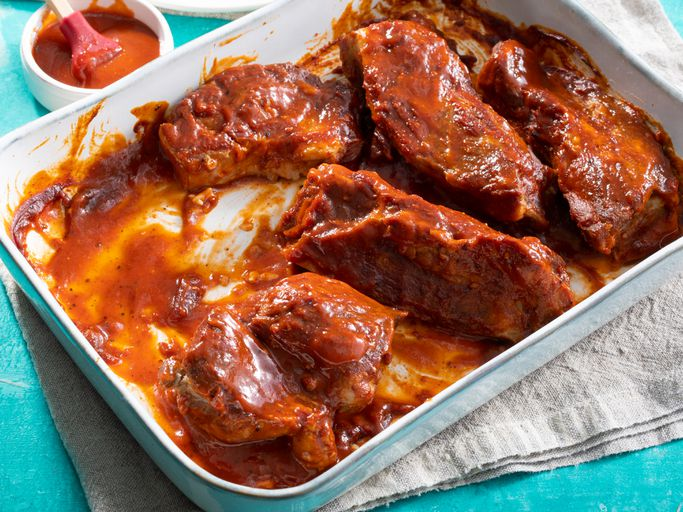

BBQ Ribs

Description:
Make the perfect ribs without the grill using this tasty BBQ ribs recipe. All you need is five simple ingredients and your oven for these tender, flavorful ribs that your whole family will love.
After one bite, you'll never want to use another BBQ rib recipe ever again.
Ingredients for the Sauce:
- 1 1⁄2 cup ketchup
- 1 1⁄2cup brown sugar
- 1 1⁄2cup red wine vinegar
- 1⁄2water
- 1 tablespoon Worcestershire sauce
- 2 1⁄2tablespoons dry mustard
- 2 teaspoons paprika
- 2 teaspoons salt
- 1 1⁄2teaspoons black pepper
- 2 dashes hot sauce of choice
Steps for making the Sauce:
- Combine brown sugar, ketchup, vinegar, water, and Worcestershire sauce in a blender.
- Season with mustard, paprika, salt, pepper, and hot pepper sauce.
- Blend until smooth to finish your BBQ Sauce.
Ingredients for Ribs:
- 21⁄2 pounds country-style pork ribs
- 2 tablespoons kosher salt
- 1 tablespoon garlic powder
- 1 teaspoon ground black pepper
- 1 cup barbeque sauce
Final Steps:
- Place ribs in a large pot and cover with water. Stir in kosher salt, garlic powder and pepper, and bring water to a boil over medium heat. Boil until ribs are tender, 40 to 45 minutes.
- While the ribs are boiling, preheat the over to 325 degrees F (165 degrees C).
- Remove ribs from the pot and place them in a baking dish. Pour barbeque sauce over ribs. Cover the baking dish with aluminum foil.
- Bake in the preheated oven until the internal temperature of the pork has reached 160 degrees F (70 degrees C), 1 to 11⁄2 hours
- Serve hot and enjoy!